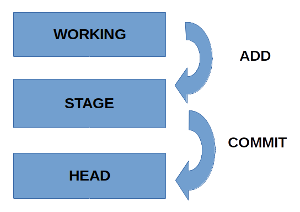

Fabian Palacios - fabianpc@gmail.com
Los archivos se mueven dentro de tres zonas de trabajo:
Este es el esquema de funcionamiento: 
Ubicate en la carpeta de inicio
Crea una carpeta para los archivos fuente
Ingresa a la carpeta creada
Inicializa el repositorio
Crea un archivo de texto con el contenido inicial
Verificar el estado del repositorio
Registrar en el area de ensayo
Verificar el nuevo estado del repositorio
Registrar los cambios en el repositorio
Crear una nueva rama y ubicarse en ella
Modificar el archivo incluyendo una nueva linea del titulo en ingles
Regresar a la rama principal
Clona el repositorio ($HOME significa tu carpeta de inicio)
Si deseas que el clon del repositorio tenga otro nombre
Verifica el resultado de las dos instrucciones anteriores
Ubicate en la carpeta de inicio
Crea una carpeta de trabajo
Ingresa a la carpeta creada
Clona el repositorio ($HOME significa tu carpeta de inicio)
Si deseas que el clon del repositorio tenga otro nombre
Verifica el resultado de las dos instrucciones anteriores
Ubicate en la carpeta de repositorio inicial
Crea un archivo nuevo
Registra en el area de ensayo
Registra los cambios en el repositorio
Cambia a la carpeta del clone con otro nombre
Revisa los archivos que constan en la carpeta
Actualiza tu repositorio clone con el repositorio inicial
Revisa los archivos que constan en la carpeta (debe constar el nuevo archivo revista)
Cambia el contenido del archivo revista.txt
Verificar el estado del repositorio
Registra en el area de ensayo (el punto representa todos los archivos creados o cambiados)
Registra los cambios en el repositorio
Subamos los cambios al repositorio inicial (rama maestra)
Fabian Palacios - fabianpc@gmail.com